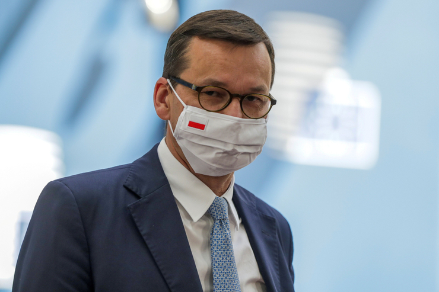

Autor:Vladimir Petras
Dočasné zníženie DPH bude platiť šesť mesiacov a má zmierniť
vplyv vysokej inflácie na finančnú situáciu domácností, uviedol
poľský premiér Mateusz Morawiecki.
Od 1. februára začne v Poľsku platiť nulová DPH na potraviny.
DPH na benzín a diesel klesne z 23 percent na 8 percent,
čo by malo znížiť ceny motorových palív v prepočte o 15 centov na liter.
Dočasné zníženie DPH bude platiť šesť
mesiacov
a má zmierniť vplyv vysokej inflácie na finančnú
situáciu domácností, uviedol premiér Mateusz Morawiecki.
Na väčšinu potravín s výnimkou luxusných tovarov platí v Poľsku DPH vo
výške 5 percent, ktorá sa na šesť mesiacov
zníži na nulu.
To zaťaží rozpočet sumou v prepočte 1,54 miliardy eur, uviedol Morawiecki.
Poľská vláda reaguje dočasným znížením DPH na prudké zrýchlenie inflácie.
Medziročné tempo rastu spotrebiteľských cien sa v decembri zvýšilo
na 8,6 %.
